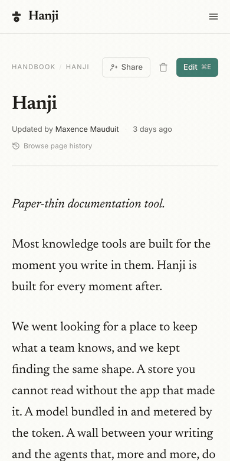

Features
The full list, in one place, with the honest status on each. If a row says shipped, it is tested and live in the front you are reading this on. If it says next, it is being built and not yet true.
Reading and writing
| Feature | Status | Note |
|---|---|---|
| Markdown reading, rendered with care | Shipped | Warm paper, serif, careful spacing |
| In-place WYSIWYG editor | Shipped | Edit, change, Update, one commit |
| Byte-fidelity edits | Shipped | A one-word edit is a one-line diff |
| Tables, with Notion-style controls | Shipped | Hover handles, insert, drag to move |
| Task lists, interactive | Shipped | Check them off in the page |
| Strikethrough and bare-URL autolinks | Shipped | Full GFM parity in the editor |
| Slash menu to insert | Shipped | Blocks, images, embeds |
| Images uploaded into the repo | Shipped | Into assets/, no external link-rot |
| Embeds, video and iframe | Shipped | Domain allowlist: figma, youtube, loom, vimeo |
| Page history, byline and revisions | Shipped | View any past version |
| Nested, collapsible sidebar | Shipped | Built from page paths |
| Breadcrumb navigation | Shipped | Middle-collapsing on deep pages |
Wikilinks, [[by title]] | Shipped | Resolved and permission-aware |
| Full-text search | Shipped | bm25, title-boosted, multi-word aware, scoped to what you can read |
| Search palette and results page | Shipped | ⌘K with ranked snippets; /kb/search with filters |
| Emoji, three ways in | Shipped | Toolbar picker, :query menu, :tada: conversion |
| Sidebar quick-create | Shipped | A + on every mount, folder, and page |
| Drag to move, reorder, and nest | Shipped | Instant, git behind, auto-revert on failure |
| Page delete | Shipped | Two-step trash, git rm, recoverable from history |
| Works on a phone | Shipped | Top bar, drawer, the same sidebar |
The rail and the agents
| Feature | Status | Note |
|---|---|---|
| Git-backed mounts | Shipped | Point at repos or folders, one tree |
| Sync and a rebuildable index | Shipped | The index is a throwaway cache |
| MCP server for agents | Shipped | Scoped search and reading |
| Propose-as-PR writes | Shipped | Agents open branches, people merge |
| Proposal review and merge, in the front | Shipped | A pending badge, a line diff, Merge and Reject |
| Per-mount permissions | Shipped | read and read+propose, one read path |
| Content-first visibility | Shipped | Everyone / restricted, inherited downward, deepest rule wins |
| Path grants, down to one page | Shipped | Mount, folder, or a single file - for people and agent tokens alike |
| Share, on the page itself | Shipped | General access + people, a name, a level, done |
hanji export | Shipped | llms.txt, llms-full.txt, and a per-page .md mirror of what is open to everyone |
| No bundled model, no metering | Shipped | By design, forever |
The workspace
| Feature | Status | Note |
|---|---|---|
| Name and logo | Shipped | SVG adapts to light and dark; anything else gets a mode-safe plate |
| Colors and fonts | Shipped | Three OKLCH seeds reinterpreted per mode, contrast secured |
| Sidebar collapse | Shipped | Automatic by mount count, or your explicit choice |
| Tailscale zero-login | Shipped | On a tailnet, the network signs people in; grants stay owner-assigned |
| A phone-ready shell | Shipped | A slim top bar, and a drawer carrying the full sidebar |
| Version in the footer | Shipped | One source of truth: the repository's own version |

For what is coming next, see Where we are. For what shipped when, see Changelog.